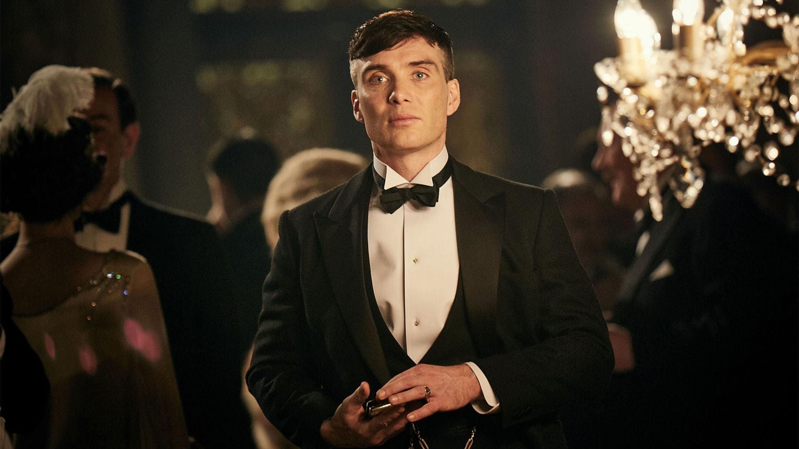
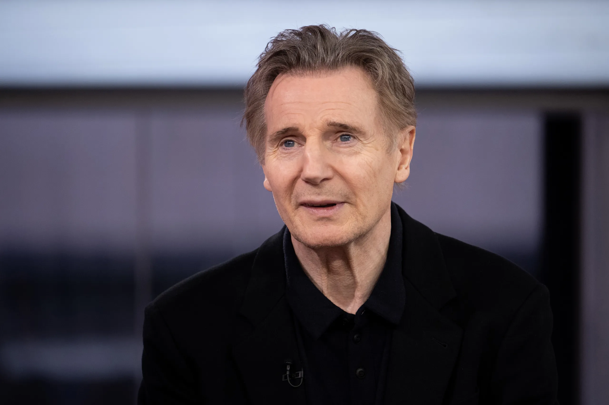

When his parents are killed, billionaire playboy Bruce Wayne relocates to Asia, where he is mentored by Henri Ducard and Ra's Al Ghul in how to fight evil. When learning about the plan to wipe out evil in Gotham City by Ducard, Bruce prevents this plan from getting any further and heads back to his home. Back in his original surroundings, Bruce adopts the image of a bat to strike fear into the criminals and the corrupt as the icon known as "Batman".
Watch The Movie Here!!!
Christian Bale as Bruce Wayne

Christian Charles Philip Bale (born 30 January 1974) is an English actor. Known for his
versatility and physical
transformations for his roles, he has been a leading man in films of several genres. He has received various
accolades, including an Academy Award and two Golden Globe Awards. Forbes magazine ranked him as one of the
highest-paid actors in 2014.
Born in Wales to English parents, Bale had his breakthrough role at age 13 in
Steven Spielberg's 1987 war film
Empire of the Sun. After more than a decade of performing in leading and supporting roles in films, he gained wider
recognition for his portrayals of serial killer Patrick Bateman in the black comedy American Psycho (2000) and the
title role in the psychological thriller The Machinist (2004). In 2005, he played superhero Batman in Batman Begins
and again in The Dark Knight (2008) and The Dark Knight Rises (2012), garnering acclaim for his performance in the
trilogy, which is one of the highest-grossing film franchises.
Bale continued in starring roles in a range of
films outside his work as Batman, including the period drama The
Prestige (2006), the action film Terminator Salvation (2009), the crime drama Public Enemies (2009), the epic film
Exodus: Gods and Kings (2014) and the superhero film Thor: Love and Thunder (2022). For his portrayal of boxer Dicky
Eklund in the 2010 biographical film The Fighter, he won an Academy Award and a Golden Globe Award. Further Academy
Award and Golden Globe Award nominations came for his work in the black comedy American Hustle (2013) and the
biographical dramedies The Big Short (2015) and Vice (2018). His performances as politician Dick Cheney in Vice and
race car driver Ken Miles in the sports drama Ford v Ferrari (2019) earned him a second win and a fifth nomination
respectively at the Golden Globe Awards.
Cillian Murphyson as Dr. Jonathan Crane / Scarecrow:
 Cillian Murphy ( born 25 May 1976) is an Irish actor. He made his professional debut in
Enda Walsh's 1996 play Disco Pigs, a role he later reprised in the 2001 screen adaptation. His early film credits
include the horror film 28 Days Later (2002), the dark comedy Intermission (2003), the thriller Red Eye (2005), the
Irish war drama The Wind That Shakes the Barley (2006), and the science fiction thriller Sunshine (2007). He played
a transgender Irish woman in the comedy-drama Breakfast on Pluto (2005), which earned him a Golden Globe Award
nomination.
Murphy began his collaboration with filmmaker Christopher Nolan in 2005, playing the Scarecrow in
The Dark Knight
trilogy (2005–2012) as well as appearing in Inception (2010) and Dunkirk (2017). He gained greater prominence for
his role as Tommy Shelby in the BBC period drama series Peaky Blinders (2013–2022) and for starring in the horror
sequel A Quiet Place Part II (2020). Murphy portrayed J. Robert Oppenheimer in Nolan's Oppenheimer (2023), for which
he received the Academy Award for Best Actor, along with a BAFTA Award, a SAG Award and a Golden Globe
Award.
In 2011, Murphy won the Drama Desk Award for Outstanding Solo Performance for the one-man play
Misterman. In 2020,
The Irish Times named him one of the greatest Irish film actors of all time.
Liam Neeson as Ra's al Ghul

William John Neeson OBE (born 7 June 1952) is an actor from Northern Ireland.[3] He has received several accolades,
including nominations for an Academy Award, a BAFTA Award, three Golden Globe Awards, and two Tony Awards. In 2020,
he was placed seventh on The Irish Times list of Ireland's 50 Greatest Film Actors.[4] Neeson was appointed Officer
of the Order of the British Empire (OBE) in 2000.
Neeson made his film debut with Pilgrim's Progress followed
by early roles in Excalibur (1981), The Bounty (1984),
The Mission (1986), The Dead Pool (1988), and Husbands and Wives (1992). He rose to prominence portraying Oskar
Schindler in Steven Spielberg's holocaust drama Schindler's List (1993) for which he earned an Academy Award for
Best Actor nomination. He played leading man roles in drama films such as Nell (1994), Rob Roy (1995), Michael
Collins (1996), and Les Misérables (1998). He took blockbuster roles portraying Qui-Gon Jinn in Star Wars: Episode I
– The Phantom Menace (1999), Ra's al Ghul in Batman Begins (2005) and Aslan in The Chronicles of Narnia trilogy
(2005–2010).
He acted in films such as the historical drama Gangs of New York (2002), the romantic comedy
Love Actually (2003),
the biographical drama Kinsey (2004), the erotic thriller Chloe (2009), the religious drama Silence (2016), the
fantasy film A Monster Calls (2016), the crime thriller Widows (2018), the anthology film The Ballad of Buster
Scruggs (2018), and the romantic drama Ordinary Love (2019). Beginning in 2009, Neeson cemented himself as an action
star with the action thriller series Taken (2008–2014), The A-Team (2010), The Grey (2011), Wrath of the Titans
(2012), and A Walk Among the Tombstones (2014), and Cold Pursuit (2019). He is known for his collaborations in the
genre with director Jaume Collet-Serra, and starred in four of his films: Unknown (2011), Non-Stop (2014), Run All
Night (2015), and The Commuter (2018).
On stage, Neeson joined the Lyric Players' Theatre in Belfast in 1976
for two years. On Broadway he earned two Tony
Award for Best Actor in a Play nominations for his performances as Matt Burke in the revival of Eugene O'Neill's
Anna Christie (1992) and John Proctor in the Arthur Miller revival of The Crucible (2002). He portrayed Oscar Wilde
in David Hare's The Judas Kiss (1998).
Gary Oldman as James Gorden

Gary Leonard Oldman (born 21 March 1958) is an English actor and filmmaker. Known for his
versatility and intense
acting style, he has received various accolades, including an Academy Award, a Golden Globe Award, and three
British Academy Film Awards. His films have grossed over $11 billion worldwide, making him one of the
highest-grossing actors of all time.
Oldman began acting in theatre in 1979 and made his film debut in
Remembrance (1982). He appeared in London's
Royal Court and was a member of the Royal Shakespeare Company, with credits including Cabaret, Romeo and Juliet,
Entertaining Mr Sloane, Saved, The Country Wife and Hamlet. He rose to prominence in British film with his
portrayals of Sid Vicious in Sid and Nancy (1986), Joe Orton in Prick Up Your Ears (1987) and Rosencrantz in
Rosencrantz & Guildenstern Are Dead (1990), and gained recognition for his role in the television film The Firm
(1989). Regarded as a member of the "Brit Pack",[2] he achieved greater recognition as a New York gangster in
State of Grace (1990), Lee Harvey Oswald in JFK (1991) and Count Dracula in Bram Stoker's Dracula (1992).
Oldman portrayed villainous roles in True Romance (1993), Léon: The Professional (1994), The Fifth Element
(1997), Air Force One (1997) and The Contender (2000). He has also played franchise roles such as Sirius Black
in the Harry Potter series, James "Jim" Gordon in The Dark Knight Trilogy (2005–2012), Lord Shen in Kung Fu
Panda 2 and Dreyfus in Dawn of the Planet of the Apes (2014). He won the Academy Award for Best Actor for his
role as Winston Churchill in Darkest Hour (2017), and was nominated for his portrayals of George Smiley in
Tinker Tailor Soldier Spy (2011) and Herman J. Mankiewicz in Mank (2020).
Oldman also wrote and directed the film Nil by Mouth (1997). Since 2022, he has starred in the Apple TV+ series
Slow Horses. He also earned a Primetime Emmy Award nomination for his role on the NBC sitcom Friends in 2001. He
has also appeared in music videos for David Bowie, Guns N' Roses and Annie Lennox.
Michael Caine as Alfred Pennyworth

Sir Michael Caine CBE (born Maurice Joseph Micklewhite; 14 March 1933) is a retired English actor.[2] Known for his
distinctive Cockney accent,[3] he has appeared in more than 160 films over a career that spanned eight decades and
is considered a British film icon.[4][5] He has received numerous awards including two Academy Awards, a BAFTA
Award, three Golden Globe Awards, and a Screen Actors Guild Award. As of 2017, the films in which Caine has appeared
have grossed over $7.8 billion worldwide.[6] Caine is one of only five male actors to be nominated for an Academy
Award for acting in five different decades.[nb 1] In 2000, he received a BAFTA Fellowship and was knighted by Queen
Elizabeth II.
Often playing a Cockney, Caine made his breakthrough in the 1960s with starring roles in
British films such as Zulu
(1964), The Ipcress File (1965), The Italian Job (1969), and Battle of Britain (1969). During this time he
established a distinctive visual style wearing thick horn-rimmed glasses combined with sharp suits and a laconic
vocal delivery; he was recognised as a style icon of the 1960s.[7][8][9] He solidified his stardom with roles in Get
Carter (1971), The Last Valley (1971), The Man Who Would Be King (1975), The Eagle Has Landed (1976), and A Bridge
Too Far (1977).
Caine received two Academy Awards for Best Supporting Actor for his roles as Elliot in Woody
Allen's comedy Hannah
and Her Sisters (1986), and as Dr. Wilbur Larch in Lasse Hallström's drama The Cider House Rules (1999). His other
Oscar-nominated films include Alfie (1966), Sleuth (1972), Educating Rita (1983), and The Quiet American (2002).
Other notable performances include in the films California Suite (1978), Dressed to Kill (1980), Mona Lisa (1986),
Little Voice (1998), Quills (2000), Children of Men (2006), Harry Brown (2009), and Youth (2015).
Caine is
also known for his performance as Ebenezer Scrooge in The Muppet Christmas Carol (1992), and for his
comedic roles in Dirty Rotten Scoundrels (1988), Miss Congeniality (2000), Austin Powers in Goldmember (2002), and
Secondhand Lions (2003). Caine portrayed Alfred Pennyworth in Christopher Nolan's Batman trilogy (2005–2012). He has
also had roles in five other Nolan films: The Prestige (2006), Inception (2010), Interstellar (2014), Dunkirk
(2017), and Tenet (2020). He announced his retirement from acting in October 2023, with his final film being The
Great Escaper, which came out in the same month.
Story by : David S. Goyer.
Based on : Characters appearing in comic books published by DC Comics.
Produced by :Charles Roven, Emma Thomas, Larry Franco
Starring :Christian Bale, Michael Caine, Liam Neeson, Katie Holmes, Gary Oldman, Cillian Murphy, Tom
Wilkinson, Rutger Hauer, Ken Watanabe, Morgan Freeman.
Cinematography : Wally Pfister.
Edited by :Lee Smith.
Music by :Hans Zimmer, James, Newton Howard
Production companies :Warner Bros Pictures, DC Comics, Legendary Pictures, Syncopy, Patalex III
Productions
Directed by :Christopher Nolan
Release date : June 17, 2005.
Running time :140 minutes.
Language : English.
Budget : $150 million.
Box office : $373.7 million.